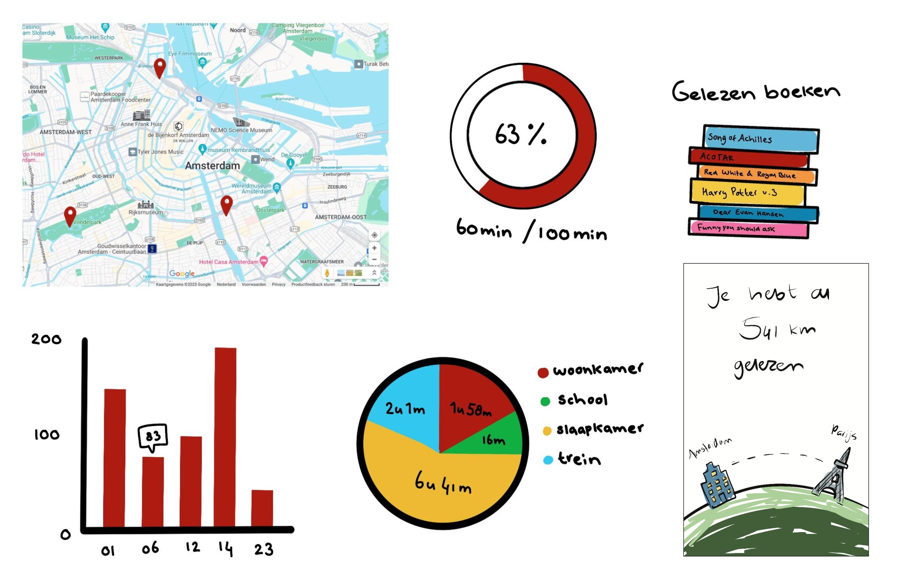
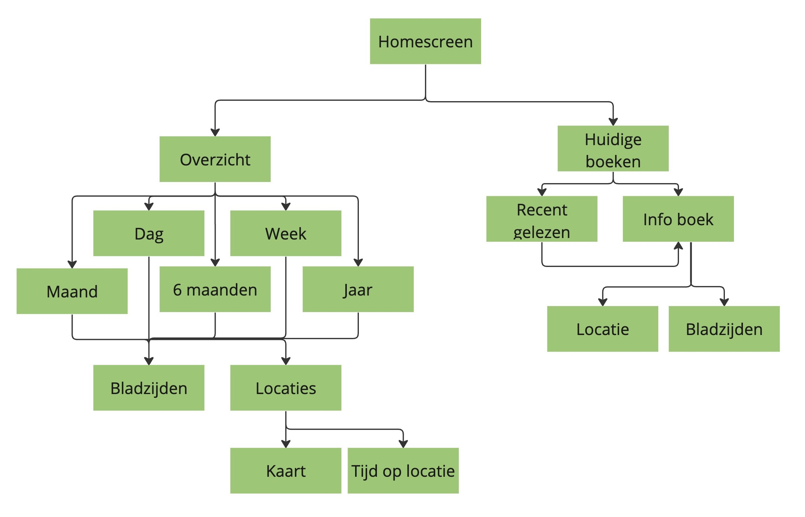

Doelgroepen, doelen en devices
| Doelgroep | Doelen (actie, wijsheid) | Device |
|---|---|---|
| Mensen die boeken lezen, | Gelezen bladzijden bij houden Tijd die gelezen wordt (per boek) bij houden, Dagelijkse leesdoel behalen, Bekijken waar hun meest gelezen plekken zijn, Gelezen boeken bijhouden |
Boeken Mobiel (app) Boekenlegger |
| Bedrijf van de boekenlegger, | Aantal gebruikers kunnen bekijken Bekijken waar gelezen wordt (welke provincie het meest), Totale tijd met product (gelezen tijd) van gebruikers bekijken, Informatie vergaren over leespatronen van de gebruikers |
Computer Mobiel Tablet |
Data-tabellen
| Datum | Begin moment | Eind moment | Pagina-nummer | BOek | Locatie |
|---|---|---|---|---|---|
| 23-08-2023 | 21:38 | 116 | Funny you should ask | Slaapkamer | |
| 23-08-2023 | 21:38 | 205 | |||
| 01-09-2023 | 10:01 | 31 | Dear Evan Hansen | Woonkamer | |
| 01-09-2023 | 10:30 | 67 | |||
| 01-09-2023 | 22:14 | 205 | Funny you should ask | Slaapkamer | |
| 01-09-2023 | 23:08 | 298 | |||
| 06-09-2023 | 15:37 | 67 | Dear Evan Hansen | Trein | |
| 06-09-2023 | 15:52 | 92 |
| Eind moment | - | Begin moment | = | Gelezen tijd |
| Pagina-nummer | - | Pagina-nummer | = | Gelezen bladzijden |
| Gelezen tijd | * | Locatie | = | Gelezen tijd op locatie |
| Gelezen bladzijden | / | Aantal pagina's | = | Vooruitgang leesdoel |
| Lees doel | - | Gelezen bladzijden | = | Vooruitgang leesdoel |
| Gelezen bladzijden | = | Aantal gelezen KM | ||
| Gelezen bladzijden | / | 40.000 (1 rondje om de wereld) | = | Vooruitgang rondje om de wereld |
Information design
Hoe kan je op een creatieve manier de data tonen?
Schermen


D.E.T.A.I.L.S
Device
Door naar beneden te scrollen is er meer ruimte voor het tonen van data in de mobiele app. Extra info verschijnt pas als er op geklikt wordt om ruimte te besparen.
Environment
De app kan overal gebruikt worden. Er is geen specifieke locatie voor nodig. Buiten, binnen, onderweg; alles kan
Time
Je kan altijd kijken hoeveel je gelezen hebt. De app is gemaakt om op een moment kort je data te bekijken. Niet om uren in de app te spenderen.
Activity
Het hoofddoel van de app is om snel op elk moment van de dag te kijken hoe ver je bent met je leesdoel: Even snel kijken hoe ver je op weg bent voor je doel. Uitgebreidere (extra) info zit dieper in de app, hiervoor ben je langer in de app bezig
Location
Net zoals lezen, kan het checken van de app overal. Er is geen locatie aan verbonden. Blijf alleen wel altijd veilig als je buiten huis op je mobiel zit.
Social
Het is nu niet in de app verwerkt omdat het niet super belangrijk is om de case te laten functioneren, maar het zou mogelijk zijn dat gebruikers hun data in de app met elkaar kunnen delen. Dan kunnen zij van elkaar zien wat en hoe veel ze lezen.
Samenhang schermen
Wat doorstaat de gebruiker tijdens het spel?
Visuele ontwerp keuzes
Ik heb gekozen voor een licht kleuren gebruik omdat ik lezen associeer met rust. Hele felle en drukke kleuren zouden dit gevoel tegenwerken.
Door de zichtbare data (tabellen) als enige een kleur te geven vallen deze op. De secundaire data is in het grijs Dit contrasteert tegen de witte achtergrond. Het valt dus wel op, maar is minder belangrijk dan de data in het groen.
Door onderscheidt in grootte en kleur in de tekst die op de pagina's te zien is, is er een hiërarchie aanwezig. Grotere en donkere tekst trekken meer de aandacht dan de kleinere lichtere tekst. Deze lichte tekst is vaak voor extra ondersteuning van de grote donkere.
Content operations
Meten van succes
Succes in deze case is de vooruitgang die geboekt wordt wat betreft het lezen van een boek.
Wanneer een gebruiker een bladzijde leest komt de gebruiker dichterbij het behalen van hun leesdoel = succes.
Dit succes wordt gemeten in aantal gelezen bladzijden. Hoe veel bladzijden er worden gelezen wordt gemeten door de boekenlegger die in het boek zit. Deze staat in verbindingen met een app op de telefoon van de gebruiker zodat hij of zij hun successen (vooruitgang) kunnen bekijken.
Wat ook onder het meten van succes gesteld kan worden is de manier waarop gemeten wordt door het bedrijf dat de app en de boekenlegger (actief) gebruikt worden. Dit wordt gemeten door bij te houden hoeveel mensen de app gedownload hebben en deze gebruiken. Vervolgens kan er gekeken worden naar de data die door de gebruiker verzameld wordt, hoeveel boeken worden er gelezen, welke boeken en hoe lang. Wanneer er geen (heftige) constante daling zit in de hoeveelheden in de data die gemeten wordt zou je kunnen stellen dat de app een succes is
Eigenaar van data
De eigenaar van de data is de gebruiker zelf. Echter heeft het bedrijf dat de app en de boekenlegger in beheer heeft ook inzicht in deze data, aangezien zij de hele reden zijn dat de data bestaat.
Wat ook een mogelijkheid zou kunnen zijn is dat de gebruiker hun data kan delen met vrienden die ook de app gebruiken. Op dat moment zou je kunnen stellen dat zij niet meer de "enige" (als je het bedrijf niet meerekent) eigenaar zijn van de data. Aangezien het nu ook in handen is van een andere gebruiker.
Het delen van data met andere gebruikers moet een keuze zijn die de gebruiker / eigenaar van de data zelf moet kunnen maken. Het moet niet iets vanzelfsprekends zijn.
Het bedrijf zou ook niet de rechten mogen hebben om deze data te delen zonder de toestemming van de gebruiker. (Zie Privacy)
Privacy
Het bedrijf van de app en boekenlegger is in bezit van de data. Ze zouden deze data kunnen verkopen / delen met uitgeverijen zodat die inzicht krijgen in welke boeken veel en snel gelezen worden en op deze manier de gebruiker van de boeken app persoonlijkere aanbiedingen kunnen aanbieden.
Omdat er ook persoonlijke data tussen zit ; locaties, zou het niet vanzelf sprekend moeten zijn dat het bedrijf dit kan doorverkopen.
De gebruiker zou zelf moeten kunnen kiezen of zij het toestaan om hun data via het bedrijf te delen met andere bedrijven.
De gebruiker moet, mocht hij of zij dat willen, de enige zijn die wat kan doen
Actueel houden van content
De content die getoond wordt is de '"live" data die verzameld wordt door de boekenlegger.
De content is altijd actueel omdat deze in directe verbinding staat met het apparaat dat de data verzameld. De content wordt namelijk constant geüpdatet.
Ethiek
In deze case kom niet heel veel ethiek naar voren.
Boeken lezen heeft niks te maken met wat mensen goed of fout vinden.
Alleen de inhoud van de boeken zouden in conflict kunnen staan met mensen hun ethiek, maar niemand hoeft te weten wat voor boeken door gebruiker gelezen worden als de gebruiker er voor kiest om deze informatie niet te delen.
Hetzelfde geld voor het delen van data, dat zou als niet ethisch gezien kunnen worden als het zonder toestemming gebeurd. Daarom moet er de mogelijkheid zijn om dit te beheren.
De normen en waarden van mensen worden niet geconfronteerd in deze case omdat er bij het bijhouden van gelezen bladzijden amper normen en waarden kunnen zijn.